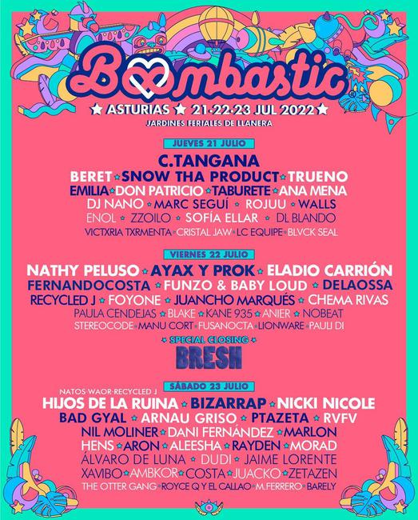
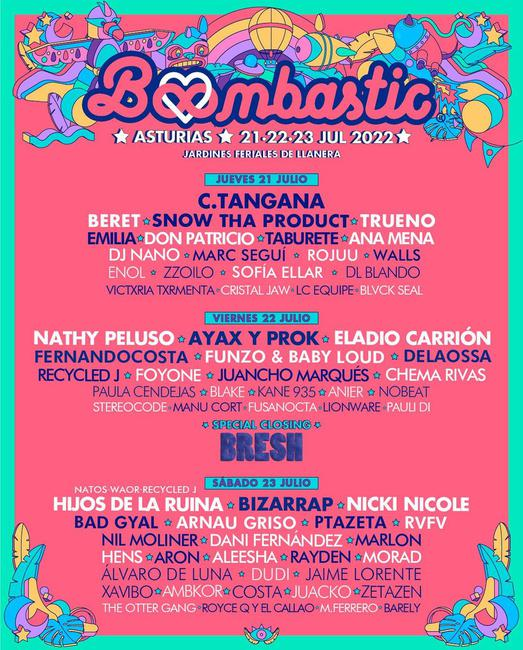

¿Que es el Boombastic?
El Boombastic es un festival de música en el que acuden un sinfín de cantantes, la mayoría de género urbano (reggaetton, trap, rap).
Actualmente se celebra en distintos sitios de España, entre ellos se encuentran Madrid o Las Palmas de Gran Canaria.
Sin embargo, el mejor cartel de los últimos años, suele ser el de Asturias, trayendo cantantes como Quevedo, Eladio Carrion, Yandel, Paulo Londra, Duki, Bizarrap, Black Eyed Peas... Aunque tampoco las otras celebraciones de boombastic se quedan cortas, trayendo cantantes exclusivos a cada ciudad, como por ejemplo al Boombastic Canarias llevando a cantantes como Juseph o La Pantera.
Ediciones Anteriores
La primera edición en la que se celebro un festival Boombi fue en Asturias en el verano de 2021, con C.Tangana como cabeza de Cartel. Atrayendo mucho interés del público joven haciendole competencia a los otros festivales de música que habia en Asturias.

 
